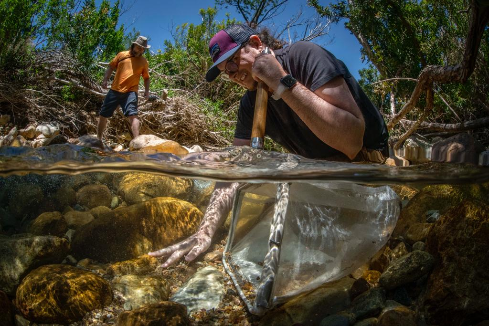
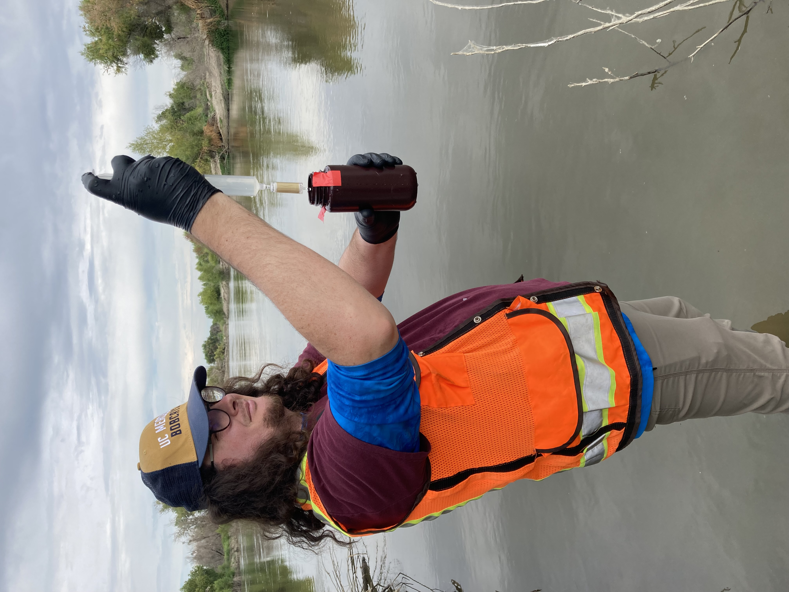
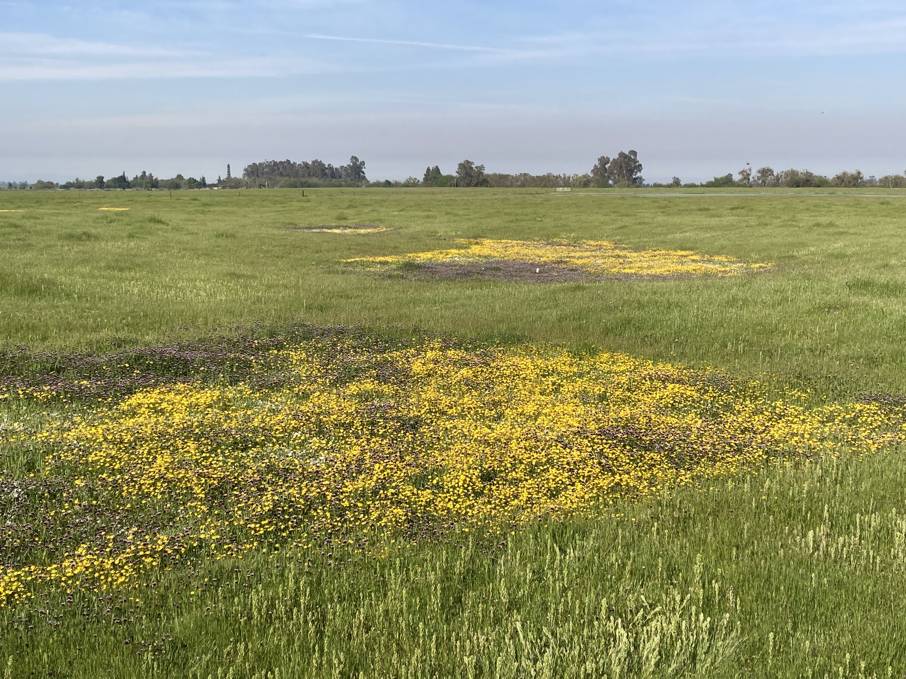

Dissertation Research Sites
Research projects
NASA BioSCape Campaign: Biodiversity Across Scales
I am working with a team of researchers from University of Colorado Boulder and University of California Santa Cruz on a project that is part of NASA’s first biodiversity focused airborne observation campaign. Our aim is to observe phylogenetic, taxonomic, and functional biodiversity across ecoregions connected along the Berg and Eerste Rivers, freshwater to marine watersheds in South Africa’s Greater Cape Floristic Region. Our goal is to improve mapping of biodiversity by improving understanding of how functional diversity relates to phylogenetic and taxonomic diversity. Specifically, this project will leverage lessons learned about the spatiotemporal signal in eDNA in Californian Mediterranean-climate watersheds to address the question: how do eDNA, traditional field, and remote sensing observations of biodiversity relate across space and time?
 :::
OpenRES: A QGIS Plugin for Functional Process Zone Delineation of River Networks
Functional process zones (FPZs) – hydrogeomorphic units of organization at valley-to-reach scales along river networks – provide a useful river classification framework for understanding riverine biodiversity patterns across watersheds. Functional process zones, defined by hydro-climatic patterns, geology, and channel and valley morphology occurring at nested, hierarchical scales, may capture how hydrogeomorphic patchiness contributes to diversity along rivers that are not well explained by continuum-related processes (e.g,. the River Continuum Concept). Yet, adoption of functional process zones for riverine applications has been limited by out of date, unsupported, or defunct spatial modeling tools (e.g., RESonate in ArcMap) and the lack of other open-source tools for derivation of the parameters needed to classify river networks into functional process zones.
To this end, I am developing an open-source plugin for QGIS, OpenRES, to enable automated extraction and analysis for classification of user-defined river segments into functional process zones from remote sensing datasets. This plugin will support subsequent analyses that are crucial for my dissertation, as well as support collaborative research with NASA’s Biodiversity Survey of the Cape (BioSCape).

Biodiversity monitoring of fallowed agricultural lands, riparian restoration, and remnant riparian lands using remote sensing and multi-locus metabarcoding
In response to groundwater regulation, California’s San Joaquin Valley is poised to fallow 500,000 acres of working lands. With this comes both significant opportunities and challenges for the agricultural, water, and conservation sectors. While the economic and groundwater aspects of this challenge have recieved much attention, biodiversity has received far less attention, despite the significant land use and land cover changes to come. Outside of studies focused on endangered species changes in response to fallowing, little is understood about the impacts of these changes, particularly where these fallow lands intersect and border existing riparian habitat. New methods are needed to evaluate biodiversity and biodiversity change in these ecosystems.
To do this, I am working with a team of collaborators at UC Santa Cruz and UC Merced to leverage both molecular methods and remote sensing to monitor biodiversity in these mixed mosaics of riparian and working landscapes. What is exciting about the merger of these two technologies is that multi-locus metabarcoding of environmental DNA can assess the community composition of organisms for which remote sensing is ‘blind’, such as bacteria and macroinvertebrates, whereas remote sensing can quantify ecosystem variables such as ecosystem structure and vegetation cover, for which multi-locus metabarcoding is not suitable. Together, remote sensing and multi-locus metabarcoding may give an integrated measure of both the diversity and the function of ecosystems.

Hydrologically informed estimation of plant species richness in vernal pools using drone-mounted LiDAR
Hydrology is an important driver of plant distributions across wetlands, yet these influences remain more readily quantified in permanent wetlands than ephemeral wetlands. This is because the locations where water flows, pools, and is retained by the underlying soils changes rapidly in time and occurs at fine spatial resolutions not typically resolved by satellite remote sensing, which presents a logistical challenge for data collection efforts for long term ecological monitoring.
To address this limitation, this study investigated the use of digital elevation models obtained over vernal pool complexes with drone-based LiDAR for generating proxies that enable prediction of plant spatial patterns. We generated high resolution (1m) hydrologic proxies related to hydroperiod, hydrologic connectivity, and soil moisture from drone-mounted LiDAR and created models to estimate the number of total plant species, as well as the number of forbs and grasses across a vernal pool complex. We found that models using drone-mounted LiDAR derived parameters enabled spatial predictions of plant species richness to within 2-3 species, suggesting that drone-based LiDAR systems may fill ecological monitoring gaps in lieu of in-situ surveys. Spatial patterns in forb and grass richness affirm the importance of hydrologic connectivity and abiotic filters on plant assembly processes.

Sensor fusion for precision agriculture applications
In the precision agriculture space, it is important to have timely estimates of key parameters, such as fractional vegetation cover, water stress, and productivity, which may then aid in estimation of yields and the holistic assessment of crop health.
To achieve this, remote sensing data must be recorded at the spatial, temporal, spectral, and radiometric resolutions required to obtain these parameters for crop management decisions. This presents challenges for remote sensing platforms, as photons can only be split so many ways, orbits and flight paths are often fixed, and personnel may not be able to visit sites as often as is needed.
One solution is to use combinations of sensors to leverage the advantages of varying resolutions in satellites, drones, and aircraft, while mitigating tradeoffs. There are many ways to achieve this, with methods such as pansharpening, Kalman filters, or machine learning / deep learning being the most common.
The approach I took was to utilize classified drone imagery as training data for machine learning models to estimate fractional vegetation cover from Planet’s CubeSat constellations. The results of this work were published as a conference proceeding at the International Geoscience and Remote Sensing Symposium 2023 (see Publications). Members of the Earth Observation and Remote Sensing Lab (EORS) are now continuing this work with the Internet of Things for Precision Agriculture (IoT4Ag) Engineering Research Center.